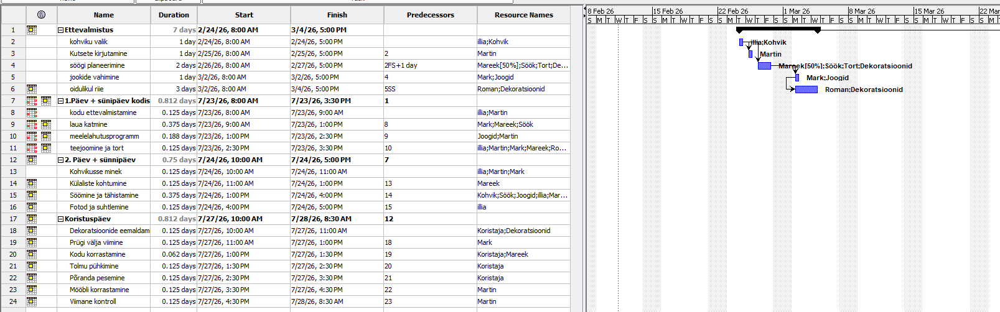
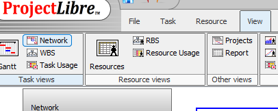
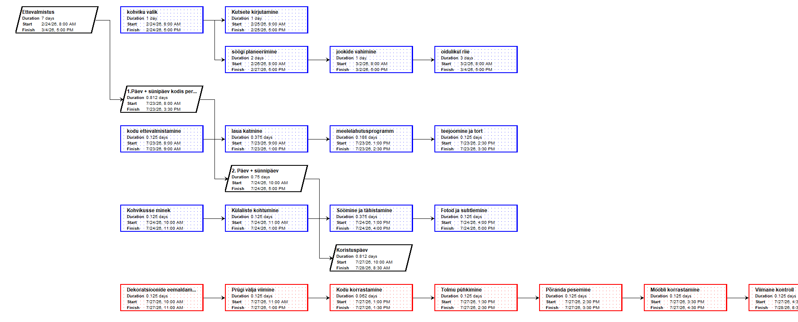

🎯 Eesmärk: Õpime, kuidas avada ja kasutada ProjectLibre's kahte olulist vaadet — Gantt-diagrammi ülesannete ajakava haldamiseks ning Network diagrammi ülesannete sõltuvuste visuaalseks jälgimiseks.
Gantt-diagrammi vaatamine
Gantt-diagrammi avamiseks liigu vahekaardile Task ja vali sealt Gantt.

Gantt-diagramm
Ekraanile kuvatakse projekt koos Gantt-diagrammiga. Vasakul asuvas tabelis saad lisada ja muuta ülesandeid ning allülesandeid, paremal pool on näha visuaalne ajakava koos päevade arvuga.

Network diagrammi avamine
Network diagrammi avamiseks navigeeri vahekaardile Views ja vali sealt Network.

Network diagramm
Avanevas vaates kuvatakse projekti ülesanded sõlmedena ning nende vahelised seosed nooltena. See võimaldab näha ülesannete järjekorda ja sõltuvusi visuaalselt.
